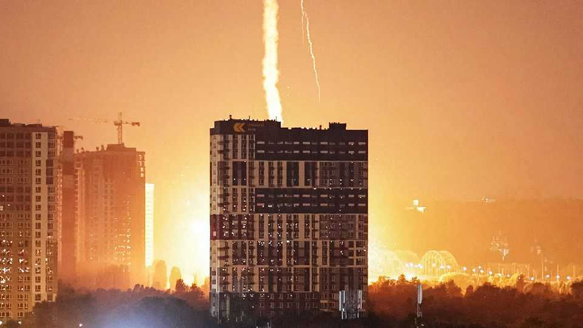
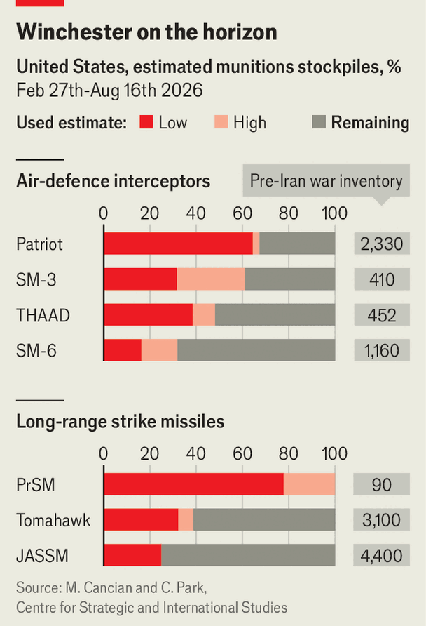
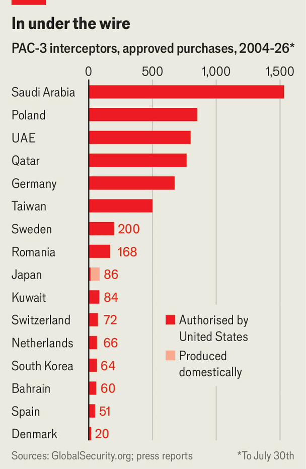

What happens when interceptor missiles run out
The growing shortage is causing panic in Ukraine and elsewhere

Aug 20th 2026
Residents of Kyiv are sleeping once again in overcrowded metro stations or in cars in underground garages. Above, the air war is turning into a turkey-shoot. Russia is bombarding the city with ever more ballistic and hypersonic missiles. Ukraine, which had previously thwarted most such attacks with Patriot anti-missile batteries, is “going Winchester”—military jargon for running out of ammunition.
Ukraine’s plight is the most acute sign of the West’s shortage of interceptors. America’s depleted arsenal also helps explain why President Donald Trump has repeatedly retreated from threats to return to war with Iran. America’s allies are alarmed.
Switzerland expects its order of Patriots to be delayed by up to seven years. Taiwan worries that 102 ordered years ago will not arrive this year as scheduled. Lockheed Martin, which makes the most advanced version, the PAC-3 MSE, says it cannot guarantee delivery times to any foreign client, given the Pentagon’s power to divert them.
Shortages of munitions are common in wartime, especially in big, attritional wars. Yet America is running short after a brief war against a medium-sized power. What if it had to fight mighty China? It would exhaust its interceptors within days, and be unable to use its bases in Japan and Guam, reckons a recent study by the Heritage Foundation, a think-tank in Washington.
The proximate cause of the crisis is the prodigious use of interceptors by America and its Middle Eastern allies during Mr Trump’s war against Iran this year. The Centre for Strategic and International Studies (CSIS), another think-tank, thinks the Pentagon has fired nearly two-thirds of its pre-war stock of Patriots, as well as big shares of other interceptors (see chart).

But the war merely hastened a reckoning that has been decades in the making. On both sides of the Atlantic defence industries work to a peacetime rhythm, though the drums of war have been beating faster. That error has been compounded by the global proliferation of missiles, generals’ tendency to spend more on flashy weapons than on the munitions they consume, America’s dysfunctional budget process and complacency about American military supremacy in the air.
The CSIS reckons it will take until 2029 to rebuild Patriot stocks to pre-war levels. That is assuming Congress approves Mr Trump’s gargantuan $1.5trn defence-budget request (a 50% increase on current spending), which is unlikely. Yet Patriots have become the prime system for point-defence—that is, to protect a specific target such as an air base—for 19 countries. “Patriot is a dinner-jacket solution: you don’t need it very often, but when you do, very little else will do,” explains Justin Bronk of the Royal United Services Institute (RUSI), a British think-tank.
The hitch is that ballistic missiles are generally cheaper than the interceptors trying to hit them (PAC-3 MSE rounds costs $4m-5m apiece). Iran’s Shahed drones (or other unmanned aerial vehicles, UAVs) are two orders of magnitude cheaper still. “If your adversary can field a one-way attack UAV for the price of a used car, and your answer is a surface-to-air missile that costs the same as a small apartment here in London, you’re losing the exchange even though you’re winning every single engagement,” Colonel Sabah Al Sabah, a Kuwaiti officer, argued at a recent RUSI event. What is more, defenders typically fire at least two interceptors at an incoming missile to improve the odds of success.
Ukraine has improvised a system of layered defences. It has a world-class network to counter swarms of Russian drones. It can also take out most larger cruise missiles, thanks in part to European air-defence systems. But only the precious Patriots can take on Russia’s Iskander-M and Kinzhal ballistic missiles. In March Ukraine boasted of intercepting about 70% of ballistic missiles. In July it was 20%. In August the rate will be even more dire. On one night—August 5th—there were no interceptions. The air force has stopped issuing regular updates. Russia, taking note, is increasing missile production.
With winter approaching, Ukraine has asked for at least 300 Patriot interceptors. Some countries still have them in reasonable numbers, including Germany, Greece, Poland and Spain. But they are increasingly unwilling to part with them.
Another solution is to build them faster. The manufacturers agreed this year to increase PAC-3 production from 600 a year to around 2,000 by the early 2030s. The Pentagon has since solicited ideas to go faster still. But Tom Karako of CSIS notes that it has not yet signed actual contracts for stepped-up output.

Allies’ industrial capacity can help. Japan produces some 30 PAC-3 interceptors a year under licence, mostly for its own use. MBDA, a European firm, is about to start production in Germany of older PAC-2 models. At a NATO summit in July Mr Trump said that Ukraine, too, would be allowed to make Patriot interceptors under licence, but has since cast doubt on the idea. Reports suggest its manufacturers, Lockheed Martin and RTX, fear losing their know-how, or being upstaged by cheaper Ukrainian versions.
Lacking the same combat experience, Europeans firms are hurrying to make their own weapons. The Franco-Italian SAMP-T is supposedly able to hit short- and medium-range ballistic missiles, but Ukrainian military sources say it works less well than Patriot PAC-2s, let alone PAC-3s. Ukraine will receive improved SAMP-T batteries, with updated interceptors, in phases from next year. Yet they are being produced in lower numbers than Patriots.
Ukraine’s nimble defence industry and upstart Western firms have revolutionised drone warfare. They are now working on missile defence. One effort is the Freyja project involving Fire Point, a Ukrainian firm, and lots more European armsmakers. They aim to develop an interceptor at a quarter of the cost of a PAC-3 without American technology, with testing to start next year. Sceptics abound. Douglas Barrie of the International Institute for Strategic Studies, another British think-tank, describes Freyja as “a moon shot”.
Taiwan is trying to expand production of its Sky Bow III interceptors, which are supposedly equivalent to PAC-2s and older PAC-3s. This year it is expected to start mass producing the Sky Bow IV, which it claims is more capable than the PAC-3. Few countries, however, would risk China’s wrath by buying Taiwanese weapons.
Lockheed Martin has announced the development of the PAC-3 ACE, aka “Baby Patriot”, which is smaller and less capable than the PAC-3 MSE but will cost half as much. It could enter production in 2028.
Some hope that laser weapons, long in development, might improve the grim arithmetic of air defence. But experimental American and Israeli weapons have so far reported success only against drones.
“Air defence cannot be separated from offensive operations,” notes David Deptula, a former American air-force general. “The cheapest interceptor is the one you never have to fire because the weapon was never launched.” There is a lot to be said for shooting the archer—in the form of enemy production sites, command-and-control centres, storage depots and missile launchers—rather than the arrow. But America has depleted its stocks of long-range offensive weapons, too. CSIS reckons it has used a third of its 3,000-odd Tomahawk cruise missiles. It has refused to supply them to Ukraine and deliveries to other clients, including Australia, Germany, Japan and the Netherlands, may be delayed.
Ukraine has built drones able to reach targets ever deeper in Russia, notably energy infrastructure, arms factories and consumer-goods-distribution warehouses. But they are slow and carry little explosive. Fire Point’s heavier Flamingo cruise missile has had some success. Ukraine hopes to deploy soon its FP-7 and the bigger FP-9 ballistic missiles, supposedly with a range of more than 800km.
Destroying mobile missile-launchers is difficult. This year America and Israel claimed to suppress Iranian missile fire by up to 90% by bombing launchers and the entrances to underground “missile cities”. But even with full control of the skies and exquisite surveillance, they never stopped it entirely. America lost radars, command centres, early-warning aircraft, refuelling tankers, drones, fighters and more. Even after the ceasefire in April, it has been unable to stop Iran shooting at ships in the Strait of Hormuz.
Any future air war against China over, say, Taiwan, would be a formidable enterprise. Chinese missiles can reach bases as far away as Alaska and Hawaii, as well as warships in the middle of the Pacific Ocean. To defend against the People’s Liberation Army (PLA), Heritage reckons America would need more than 19,000 Patriot interceptors—more than 20 times CSIS’s estimate of current stocks.
Shooting at the PLA archer would be a tempting alternative, but poses two big problems beyond penetrating China’s air defences. First, America would have to strike the Chinese mainland, which would invite retaliation against the continental United States. Second, the PLA Rocket Force is responsible not just for conventional missiles, but also land-based nuclear ones: attacks on it might be seen as an attempt to destroy China’s nuclear forces, risking nuclear escalation.
Instead, American forces are practising how to survive within China’s “weapons-engagement zone” through various forms of dispersal. In a world of proliferating, cheap drones and missiles, hardening, dispersing and concealing military targets—and rebuilding them quickly if they get destroyed—are essential skills.
Although deep-strike weapons are no panacea, they do help to deter attack. That explains why America’s allies are scrambling to find the means to shoot at faraway targets. Ukraine, already under relentless attack, hopes that carrying the war to Russia will cause enough pain to make Vladimir Putin reconsider endless conflict.
All the possible solutions to the interceptor shortage, even if accelerated and intensified, will take time. In Ukraine, meanwhile, civilians must still shelter underground. As they contemplate another freezing winter of peril, many will ask how their leaders let it come to this. Other governments should take heed. ■